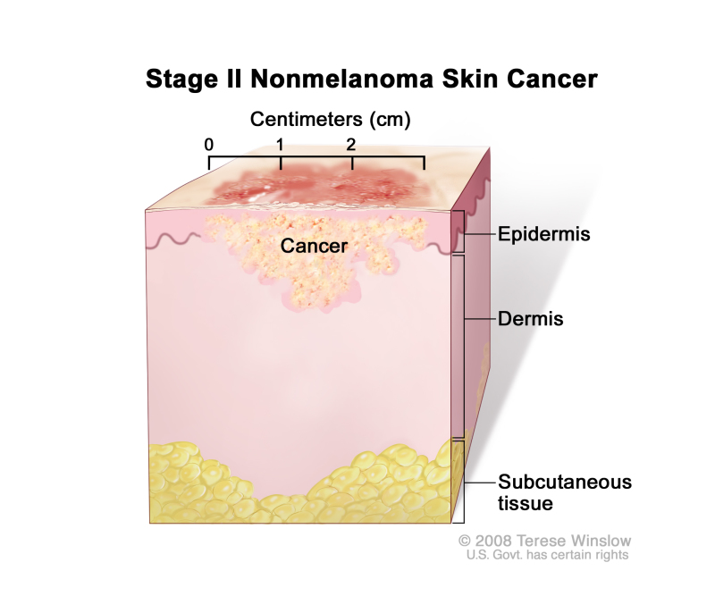

Non-Melanoma Skin Cancer
Visit the repository for this site here.
Non-Melanoma Skin Cancer is a type of cancer the skin that is unrelated to melanin.
Its caused by overexposure to UV light.
The skin is what gets affected, obviously.
It's diagnosed using a skin exam, skin biopsy, and other things.
You are more likely to get this type of cancer if you:
- are older
- have pale skin
- have red hair
- have fair hair
- have blue eyes
- have green eyes
- have many freckles/moles
- have had skin cancer in the past
- have a family history of skin cancer
There were 331,722 recorded cases of non-melanoma skin cancer in 2022, and over 100,000 of which were from the US.
This cancer is usually removed by surgery, but it can depend on the type.
You can prevent this type of cancer by:
- not using tanning beds
- not using sunlamps
- wearing sunglasses with 100% UVA/UVB protection
- wearing clothing to shade your body
- using sunscreen
- taking regular skin exams
While this cancer is quite easy to get, its also quite easy to remove. Always report early signs to a doctor.
If it reaches the bloodstream it may spread to other parts of the body, creating much worse cancers.
